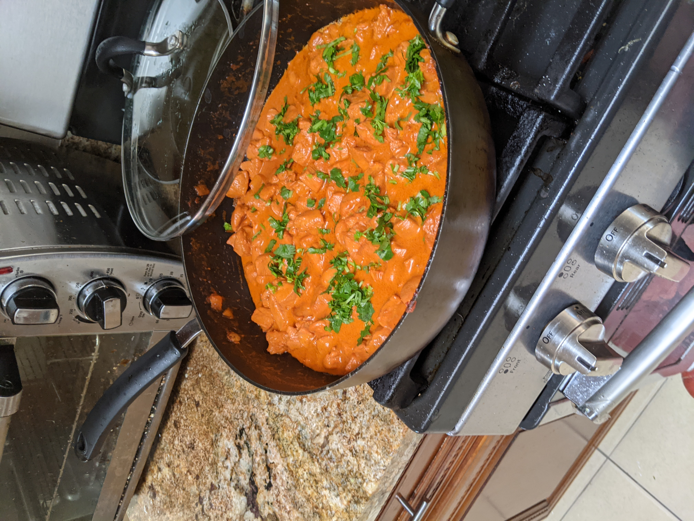

Butter Chicken

A classic dish without the classic prep time
This dish takes about 30 minutes to cook and is perfect for a quick hearty meal.
Ingredients
- 2 Chicken Breast
- 2 Cloves Garlic
- 2 Cups Heavy Cream
- 1/2 Cup Tomatoe Paste
- 3 Tbsp Grated Giniger
- 2 Tbsp Tikka Masala Powder
- 1/2 Cup Cilantro for Garnish
Instructions
- Cut chicken breasts into aproximately 1 in cubes
- Mix the cut pieces of chicken with the masala powder
- Mince the garlic and ginger together, then using the flat edge of your knife, spread them into a paste on the cutting board
- Heat a pan on medium heat and coat the bottom of the pan with olive oil
- Once the pan is hot, add the ginger-garlic paste and cook until fragrant
- Add the chicken and sear
- Add the 1/2 cup of tomatoe paste and cook for 2 minutes to reduce
- Add the 2 Cups of heavy cream and mix
- Add salt and bring to a boil, then turn the heat to low, cover the pan and let simmer for 10 minutes
- Garnish with cilantro
Return to Homepage